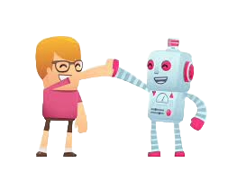

 Robots zijn nog best wel jong vooral als we het hebben over robots die echt zelf kunnen nadenken met A.I of robots die fysiek de zelfde dingen doen als mensen. In de toekomst verwachten we dat robots een grote rol gaan spelen in onze maatschappij op het gebied van arbeid maar ook het sociale gebied zoals een robot die je gezelschap houdt. Aangezien Robots een best wel recente ontdekking is en we nu al zoveel kunnen met robots is het onvoorspelbaar voor wat er in de toekomst op ons te wachten staat. Van robots die hele huizen bouwen tot robots die later misschien je echtgenoot kunnen worden, het zou allemaal kunnen. We verwachten op het gebied van industrie en huishoudt nog veel meer ontwikkelingen, in de toekomst worden waarschijnlijk alle huishoudens schoongemaakt door automatische robots en in de industrie wordt een groot deel overgenomen door robot armen aangezien dit gewoon vele malen voordeliger is. Veel mensen zijn bang dat robots later de intelligent worden en de mensheid gaat overnemen dit komt omdat in sciencefiction verhalen robots de mensheid helemaal uitroeit of gebruikt als slaafjes, maar in het echt is dat niet heel realistisch. Robots zijn geprogrammeerd om bepaalde taken uit te voeren daarom missen ze de intentie en het bewustzijn om überhaupt op het idee te komen om de mensheid iets naars aan te doen. Het ligt eigenlijk allemaal in de handen van de ontwerpers, het ligt eraan wat de doelen zijn van de ontwerper en hoe hij/zij de robot programmeert alleen als de ontwerper kwaadaardige bedoelingen heeft kan een robot echt de fout in gaan.